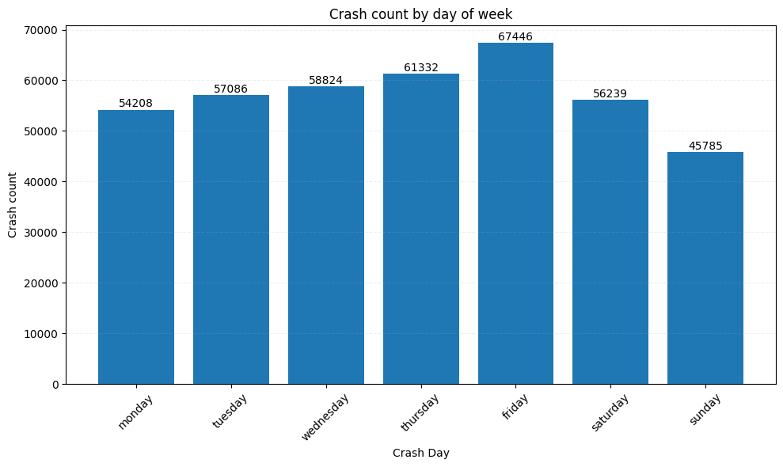
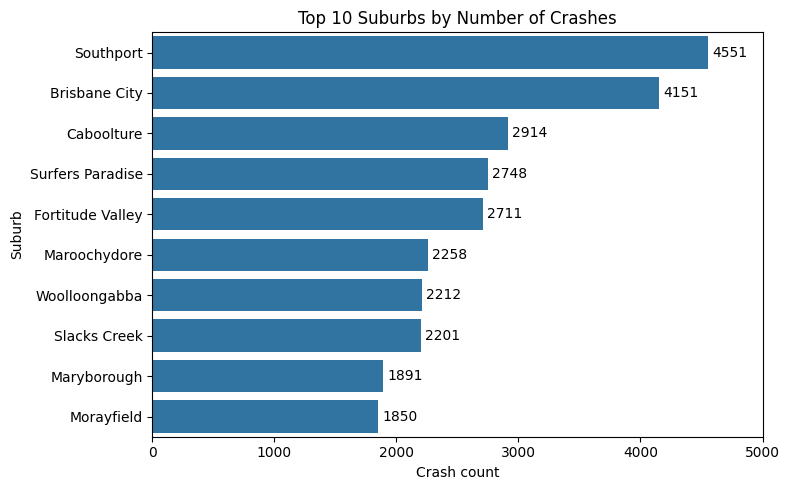
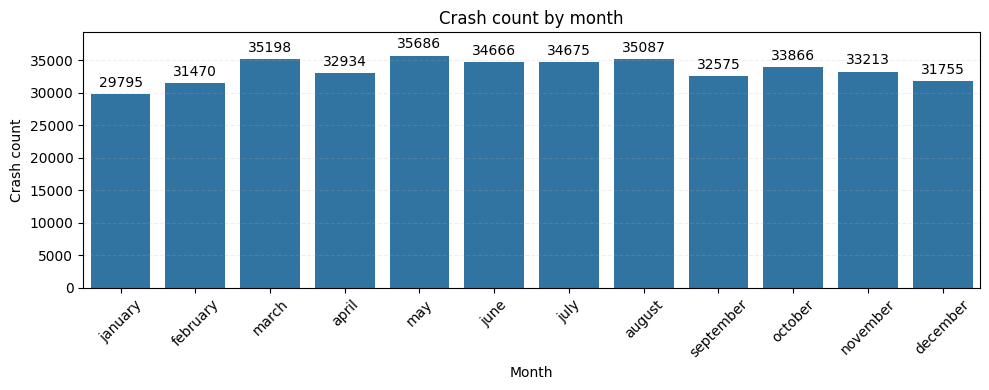
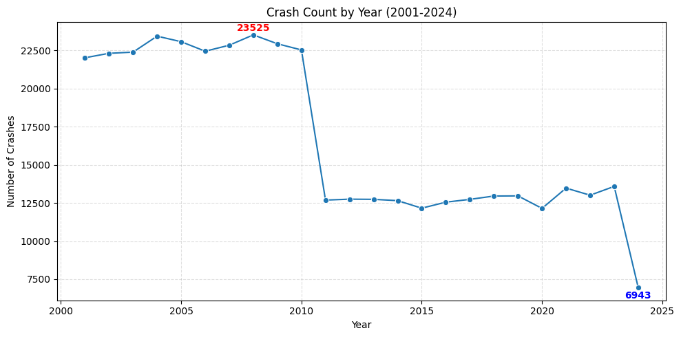
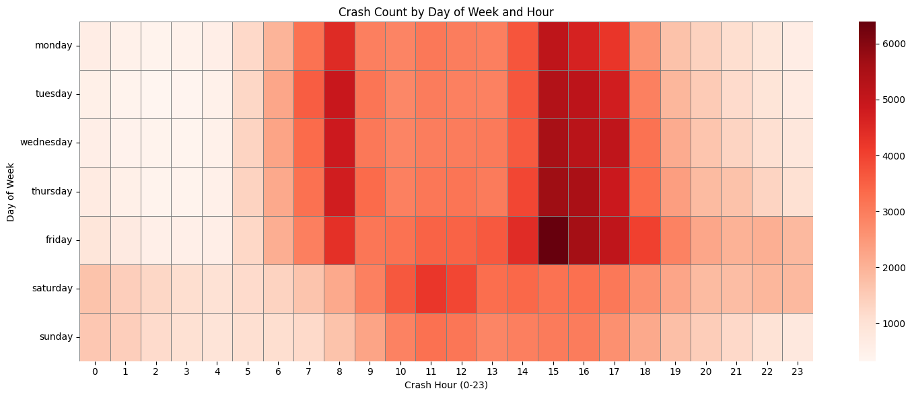
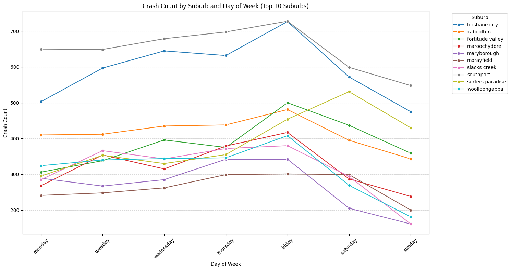
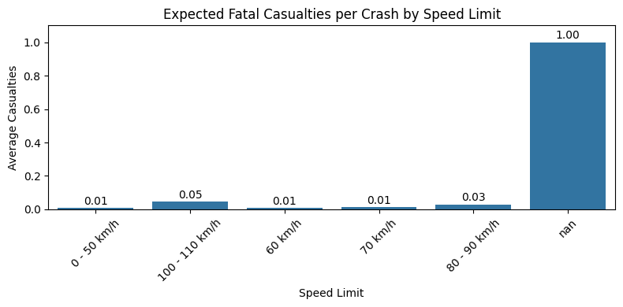
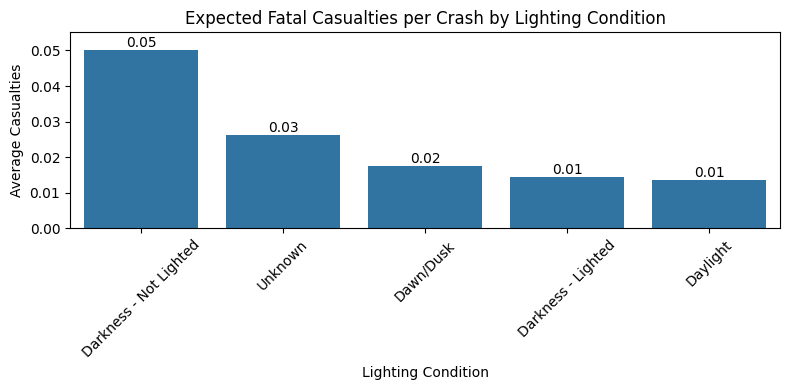
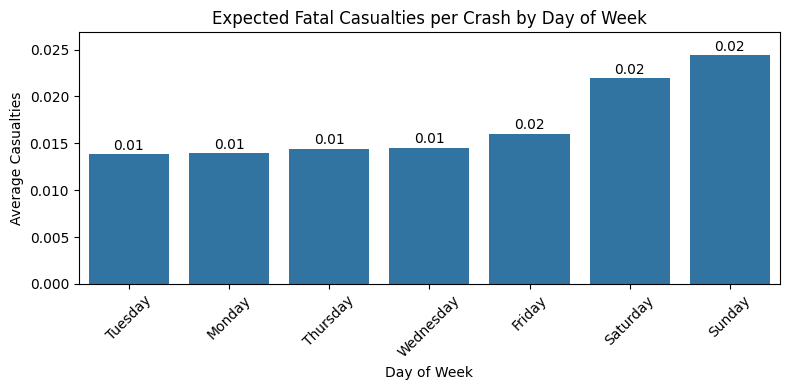
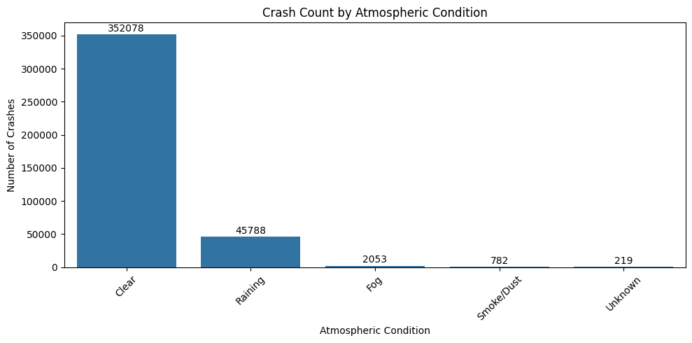

Detailed Analysis & Findings
This document provides a comprehensive breakdown of the exploratory data analysis performed on the road crash dataset (2001-2024). Each section outlines a specific question, the hypothesis, the findings from the data, and the limitations of that particular analysis.
Table of Contents
- Crashes by Day of Week
- Top Suburbs by Crash Count
- Crashes by Month
- Yearly Crash Trends
- Hourly and Daily Crash Hotspots
- Daily Crash Patterns in Top Suburbs
- Factors Influencing Fatal Casualties
- Geospatial Mapping of Recent Crashes
- Crashes by Atmospheric Condition
- Crashes by Lighting Condition
- Overall Project Limitations
- Future Work
1. Crashes by Day of Week
- Hypothesis: Crashes will be most frequent on weekdays during commute hours and on Friday and Saturday nights due to social activities.
- Findings: Crash counts peak on Friday at 67,446, followed by Thursday and Wednesday. Sunday recorded the lowest count at 45,785. This aligns with the typical workweek traffic flow.
- Key Insight: Friday crashes are 47% higher than Sunday crashes, indicating significant weekly variation in crash risk.

2. Top Suburbs by Crash Count
- Findings: Southport has the highest number of crashes, followed by Brisbane City. These are likely major commercial or transport hubs with heavy traffic flow.
- Key Insight: The top 10 suburbs account for a disproportionate share of total crashes, suggesting targeted safety interventions in these areas could have significant impact.

3. Crashes by Month
- Findings: March shows the peak crash count, likely due to increased travel during holiday season and weather conditions. January has the fewest incidents.
- Key Insight: March crashes are approximately 20% higher than January crashes, indicating significant seasonal variation.

4. Yearly Crash Trends
- Findings: The highest crash count occurred in 2011 (23,525), while 2024 recorded the lowest (6,943). Crash numbers declined sharply after 2010.
- Key Insight: The 70% reduction from 2011 to 2024 suggests significant improvements in road safety measures or traffic management.

5. Hourly and Daily Crash Hotspots
- Findings: The heatmap shows a dark red concentration during the **afternoon hours (3-6 PM) on weekdays**, with **Friday afternoon being the absolute peak**.
- Key Insight: Friday 5 PM shows the highest crash concentration, suggesting end-of-week fatigue combined with rush hour traffic creates the most dangerous driving conditions.

6. Daily Crash Patterns in Top Suburbs
- Findings: Most high-incident suburbs follow the general trend of a Friday peak, but some show a steeper increase than others, indicating different weekly traffic rhythms.
- Key Insight: Commercial districts show more pronounced weekday peaks, while residential areas show more consistent patterns.

7. Factors Influencing Fatal Casualties
- Findings: The average number of fatalities per crash increases dramatically with speed limit. **"Darkness - Not Lighted"** is by far the most dangerous lighting condition.
- Key Insight: Crashes in darkness without lighting are **3-4 times more likely** to result in fatalities compared to daylight crashes.



8. Geospatial Mapping of Recent Crashes
- Findings: The interactive Folium map shows a clear clustering of crashes. **Brisbane City** recorded the highest number of incidents, exceeding 3,000 over the 23-year period.
- Key Insight: Crash clusters align with major arterial roads and commercial districts, confirming that traffic volume and road type significantly influence crash frequency.
If the map does not load, open directly: Open interactive map
9. Crashes by Atmospheric Condition
- Findings: Most crashes occurred in Clear Weather, more than ten times higher than in rain, and hundreds of times higher than in other conditions.
- Key Insight: While clear weather has the highest absolute crash count, adverse weather conditions may have higher crash rates per vehicle-mile traveled.

10. Crashes by Lighting Condition
- Findings: A large majority of crashes occur during **Daylight**.
- Key Insight: Despite lower traffic volume at night, crashes in darkness show higher severity rates, suggesting reduced visibility significantly impacts crash outcomes.
Overall Project Limitations
- Reporting Bias: The data only includes crashes that were reported to authorities.
- Correlation vs. Causation: This analysis identifies correlations but does not prove causation.
- Traffic Volume Normalization: Without traffic volume data, we cannot determine if high-crash areas are truly more dangerous or simply have more traffic.
Future Work
Based on the findings, future analysis could explore:
- Crash Rate Analysis: Normalize crash counts by traffic volume or road length to find truly dangerous areas.
- Severity Modeling: Build a predictive model to identify the factors most indicative of a severe or fatal crash.
- Time Series Forecasting: Use historical yearly/monthly data to forecast future crash counts.
Explore the Code
For a detailed look at the Python scripts, ETL process, and SQL queries used in this analysis, please visit the project repository on GitHub.
View on GitHub